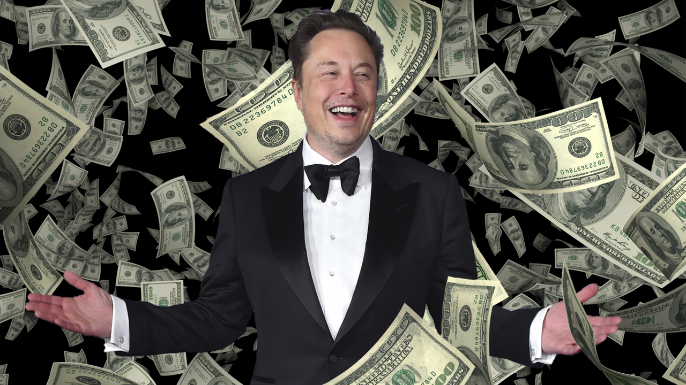

Elon Musk, né en 1971, est un entrepreneur et milliardaire connu pour avoir fondé SpaceX en 2002, une société d'aérospatiale et de transport spatial dont il est toujours le PDG. L'objectif de SpaceX est de réduire les coûts d'accès à l'espace et de rendre possible la colonisation de Mars. Avant SpaceX, Musk cofonde Zip2 puis X.com, devenue PayPal. Ensuite, il rejoint Tesla en 2004 et en devient le PDG en 2008. Il participe aussi à la création de SolarCity, OpenAI, The Boring Company, Neuralink et fonde xAI en 2023. En 2022, il rachète Twitter et le renomme X.